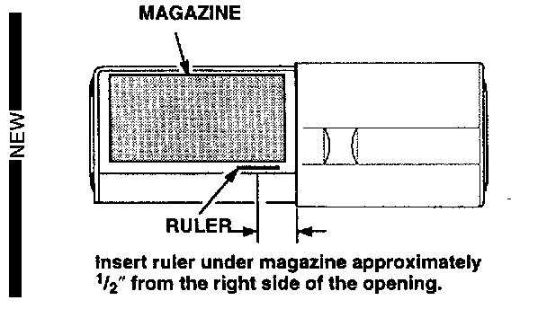

One-Piece Door Model (SLX Only)
1. Open the changer door. [NEW]
2. Check to see if all the trays are in the magazine. [NEW]
^ If a tray is stuck in the changer, replace the changer. [NEW]
^ If all the trays are in the magazine, place the changer in a horizontal position, and insert a thin stainless steel ruler or a "Slim Jim" under the magazine, about 1/2" from the right side of the opening. [NEW]
3. Push the ruler in until it presses against the eject lever at the back of the unit. [NEW]
4. Slowly remove the ruler and magazine at the same time. [NEW]